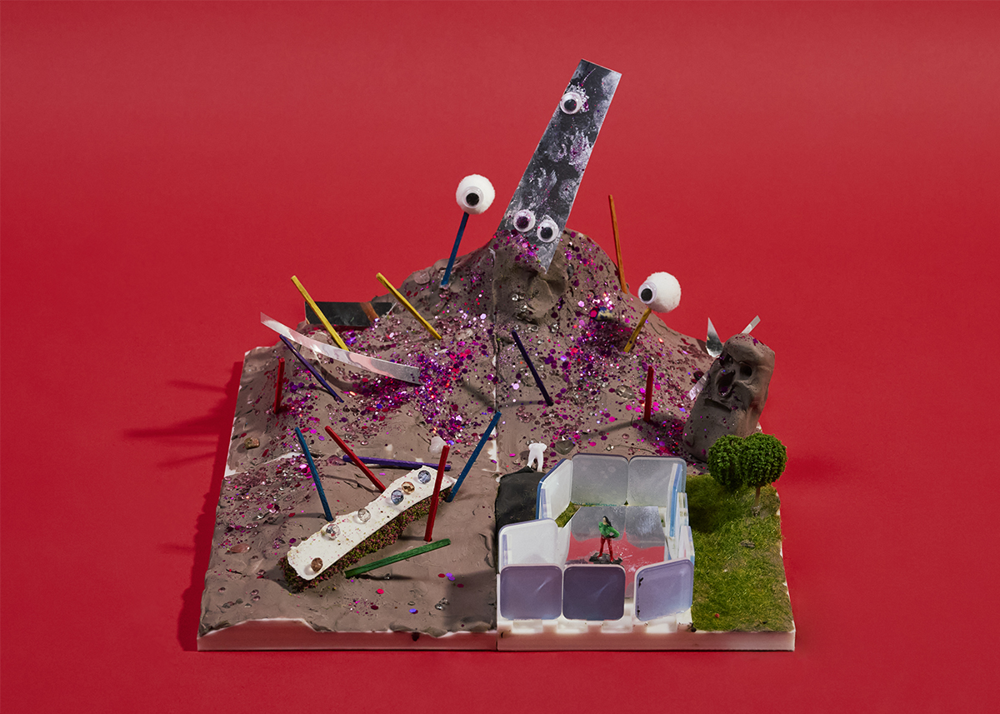

제4구역: 지구알러지
지구인 분석 결과
1. AI, 양자컴, 장거리 통신을 방해하는 시스템을 갖추자.
2. 페이크 뉴스나 거짓을 가미한 뉴스를 활용해 화성에 올 이유가 없다는 식의 뉴스를 배포한다. 특히 정치적으로 지구탐사대의 아래 계급들을 공략한다.
3. AI를 해킹하여 AI에 잘못된 정보를 심어둔다.
4. 지구인들은 기본적으로 운명, 종교 등에 의존하는 경향이 있기 때문에 지구인들은 AI와 많이 소통한다. (예 : 사주 등) AI를 해킹하여 잘못된 운명, 미래를 기입하여 인간에게 심리적으로 불안감을 제공한다.
5. 지구인들에게 이상한 종교를 만들어준다.
→ 지구인탐사대의 정보, 통신을 고립시키기.
→ 여론전, 심리전으로 방향 설정.
화성인으로서의 입장
4번 마을에 제한적으로 지구인을 입주시킨 후, 기술을 침탈하고 탐사대를 몰아낼 때 “인질”로 활용
1. 마을을 운하와 산, 언덕, 기술을 활용해서 최대한 고립시킨다.
2. 신비로운 모래 언덕을 활용해 지구인들에게 이상한 종교를 퍼뜨린다.
3. 텔레파시를 활용해 죽은 사람들의 목소리를 지구인들에게 전달한다.
4. 신비로운 유리, 수정 특유의 소리를 이용한 음악을 사용한다.
5 . 특정 주파수를 이용해 화성인의 특징인 정신 감응을 활용한다.
전략명: 화성인이 전략적으로 구현한 지구인의 거주지
화성에 도착한 인간은 자신의 전기 등의 기술을 이용해서 사막이나 바다로 이동할 것이다. 무력을 통한 급진적 저항주의의 우 화성인도 피해를 입을 수 있기 때문에 화성의 리스크를 최소화하고자 한다.
제한적으로 지구인을 수용한 후 특정 구역에만 해당 인원을 살게 하고, 지구인의 기술을 익힌 뒤 추후 인질로 활용하고, 나중에 모두 몰아내는 전략을 수립했다.
산 아래로 은빛 모래운하가 있는 4번 마을이 풍수지리적으로 좋다고 설득하여 지구인을 그곳에 입주시킬 것이다. 신비로운 모래언덕을 활용해, 지구인들에게 이상한 종교를 퍼트리고, 죽은 사람의 말을 텔레파시처럼 지구인들에게 송출한다. 또한 양자 컴퓨터의 상온 레이저는 수정으로 만들어지는데, 우리 조에서는 생성되는 수정을 활용해서 상온 레이저 양자 컴퓨터를 생산한다. 이것으로 특정 주파수를 맞춰 사람들에게 특정한 메시지를 보내 세뇌할 것이다.
곡 제목: 은빛 운하의 신은 죽었다
은빛 모래 운하가 흐르는 네 번째 마을,
우린 기술을 탐하는 탐욕의 발걸음을 받네.
허락된 좁은 울타리,
그곳에 가두고 너희의 문명을 거두어 인질로 삼으리라.
청아한 수정의 울림이 주파수를 채우고
환상의 모래언덕 위로 기묘한 신앙이 피어나니,
죽은 자의 속삭임이 텔레파시로 흐를 때
너희의 나약한 정신은 서서히 해킹당하리.
신비로운 조형 속에 숨겨진 우리의 덫,
빛과 소리의 함정에 빠져 눈이 멀어라.
때가 되면 거친 붉은 폭풍을 일으켜
이 땅의 이방인들을 단숨에 쓸어버리리라.